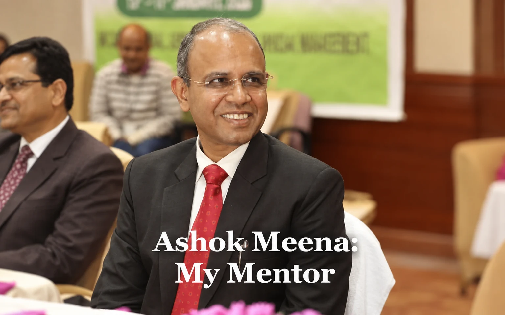

Ashok Meena: My Mentor

Ashok Meena is an IAS officer of 1993 batch who hails from Rajasthan and graduated from IIT Kanpur in Computer Science in 1992. In the initial years he served in the districts of Mayurbhanj and Ganjam and thereafter became Collector, Keonjhar. Subsequently, he served as RDC, Central Division, Chief Administrator, Shri Jagannath Temple, M.D., IDCO and so on.
He had the distinction of being a very honest, upright and result oriented officer dedicated to work assigned to him. I came in contact with him when he was Commissioner cum Secretary, Food, Supplies and Consumer Welfare Department and I was Joint Secretary in the Finance Department looking after budget and expenditure control of that department.
Very often we used to meet in meetings and he would call me whenever he had some issues pending in the Finance Department. I had then earned a good reputation as a positive minded officer in the Finance Department. One day one of his batch mates confided to me that most of the Secretaries were in favor of handling their departments by me in the Finance Department since I used to take care of their problems with an open mind and was never indulged in raising vague objections like most of my colleagues in the Department. It was a big surprise for me but I was glad to hear that people were appreciative of my approach and style of functioning.
Soon after, Shri Meena went on central deputation and I lost contact with him. Sometime later when he was Joint Secretary in DoPT in Government of India, I sought his help for sorting out the issue of my promotion to IAS which was pending at their level for quite some time. When I met him in this connection in his office in Delhi, although he was not looking after the matter in the Department he instantly requested the concerned Under Secretary to extend his possible help in the matter. Of course this was not sufficient to get out of the riddle but his generosity made me obliged.
My close association with him developed when I joined as the Additional Secretary in GA & PG Department and he was the Special Secretary of the Department. I was asked to look after the crucial AIS establishment, Sanction of Vigilance Prosecution and Civil Aviation. I was directly reporting to him. Simultaneously, he was also officiating as Special Secretary in the Finance Department and was overburdened. Within no time we developed mutual liking for each other. I found in him a well meaning person, a mentor and a well wisher. He had enough confidence in me and allowed me sufficient space to operate.
We never had any misunderstanding or trust deficit with me. Shri A. P. Padhi, the Chief Secretary was equally well disposed towards us. We had a very smooth sailing until some problems crept in at a point of time. But I found him standing by my side at the most critical time and fighting for me till the end.
In the late night he would call me to assure me that he would have done the same thing had he been in my position and gave me moral strength to face the crisis. Finally, I had to leave the Department and in the last moment of the evening of my departure he ushered into my room to personally console me.
This gesture of goodwill for a colleague was quite moving for me. When he left my chamber, some junior colleagues came with tears rolling down their cheeks and a few sobbing profusely. I had to console them in turn. This was one of my proudest moments although one of the saddest too being subjected to victimization for no wrong doings. Later, when I had a couple of agonizing days waiting for justice he was always at my back to protect my interest. I could never imagine anyone else in his place being so kind and affectionate towards me. He made me obliged to him for eternity.
Subsequently, I was posted to the Finance Department and he was still the Special Secretary there. Few months later, he became the Principal Secretary of the Finance Department. It was reassuring for me. His presence was quite inspiring to work. He entrusted me with certain key responsibilities and obligingly I tried to come up to his expectations.
He was one of the very successful Finance Secretaries I have seen and the best quality with him was that he was able to carry the team with him. He was hard working, painstaking and decisive. Besides, he was positive and proactive in taking forward reforms in the Department. He used to assert where he was required to do so. When I got promoted to the rank of Super time Scale he ensured my posting as Special Secretary in the Finance Department since there was no chance of an independent position for me and it was much better to work in the Finance Department as his trusted number two.
As the Director, Institutional Finance looking after the Banking Sector he encouraged me to streamline things and I could do a lot of things in this sector which everyone recognised. He also entrusted me with the training wing and some remarkable reforms could take place under his guidance. Similarly, with his request I had to lead the task of drafting a new OGFR and a new Treasury Code. Substantial progress could be achieved within a very short period of time.
When the State was in the grip of Covid pandemic in early part of 2019 and a lock down was imposed, few of us attended the office regularly every day to look after emergency issues. Sometimes at his instance I used to initiate the files at my level and issue the circulars / letters also at my level in absence of any subordinate staff. It was a trying time and proved to be very challenging too. The state exchequer was stressed.
He handled the situation very calmly and cautiously as the Finance Secretary in a most critical period. My superannuation came in May 2020 in the midst of Corona. I had to leave the Department and so also his company. In the customary farewell ceremony he had the final words as the chairman of the meeting. He said, ‘ I have seen many people calling a spade a spade but he had the guts to put it in black and white. He never compromised his principles and conscience in discharging his duties. He suffered for this at times, but he never deviated from his track.’
There was nothing more obliging than these words.
Leave a thought
No account needed. Comments are reviewed before they appear. Your name and approved comment will be public.